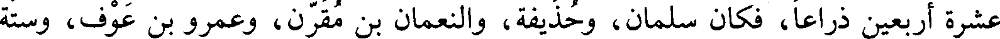
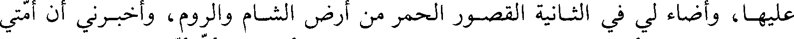
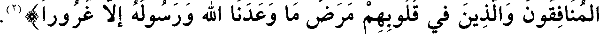
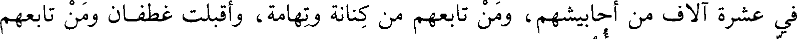
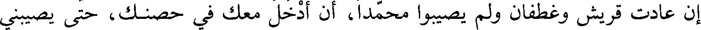
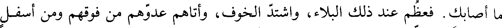
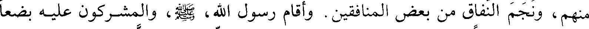

File: 000540.gt.txt (if the image is defective, simply delete all Arabic text and the line will be excluded)

وكان الرجل من المسلمين إذا نابته نائبة لحاجة لا بد منها يستأذن رسول الله، صلي الله عليه و سلم،
File: 000541.gt.txt (if the image is defective, simply delete all Arabic text and the line will be excluded)

فيقضي حاجته ثم يعود، فانزل الله تعالى: (إنما المؤمنون الذين آمنوا بالله ورسوله)(3)
File: 000542.gt.txt (if the image is defective, simply delete all Arabic text and the line will be excluded)
الآية.
File: 000543.gt.txt (if the image is defective, simply delete all Arabic text and the line will be excluded)
وقسم الخندق بين المسلمين، فاختلف المهاجرون والأنصار في سلمان، كل يدعيه
File: 000544.gt.txt (if the image is defective, simply delete all Arabic text and the line will be excluded)

أنه منهم، فقال رسول الله، صلي الله عليه و سلم:(سلمان منا، سلمان منا أهل البيت)(4). وجعل لكل
File: 000545.gt.txt (if the image is defective, simply delete all Arabic text and the line will be excluded)

عشرة أربعين ذراعا، فكان سلمان، وحذيفة، والنعمان بن مقرن، وعمرو بن عوف، وستة
File: 000546.gt.txt (if the image is defective, simply delete all Arabic text and the line will be excluded)

من الأنصار يعملون، فخرجت عليهم صخرة كسرت المعول، فاعلموا النبي، صلي الله عليه و سلم، فهبط
File: 000547.gt.txt (if the image is defective, simply delete all Arabic text and the line will be excluded)

إليها ومعه سلمان، فأخذ المعول وضرب الصخرة ضربة صدعها، وبرقت منها برقة
File: 000548.gt.txt (if the image is defective, simply delete all Arabic text and the line will be excluded)

أضاءت ما بين لابتي المدينة، فكبر رسول الله صلي الله عليه و سلم، والمسلمون، ثم الثانية كذلك، ثم
File: 000549.gt.txt (if the image is defective, simply delete all Arabic text and the line will be excluded)
الثالثة كذلك، ثم خرج وقد صدعها، فسأله سلمان عما رأى من البرق، فقال رسول الله،
File: 000550.gt.txt (if the image is defective, simply delete all Arabic text and the line will be excluded)

صلي الله عليه و سلم: (أضاءت الحيرة وقصور كسرى في البرقة الأولى، وأخبرني جبريل أن أمتي ظاهرة
File: 000551.gt.txt (if the image is defective, simply delete all Arabic text and the line will be excluded)

عليها، وأضاء لي في الثانية القصور الحمر من أرض الشام والروم، وأخبرني أن أمتي
File: 000552.gt.txt (if the image is defective, simply delete all Arabic text and the line will be excluded)

ظاهرة عليها، وأضاء لي في الثالثة قصور صنعاء، وأخبرني أن أمتي ظاهرة عليها،
File: 000553.gt.txt (if the image is defective, simply delete all Arabic text and the line will be excluded)

فأبشروا)، فاستبشر المسلمون(1).
File: 000554.gt.txt (if the image is defective, simply delete all Arabic text and the line will be excluded)

وقال المنافقون: ألا تعجبون؟ يعدكم الباطل، ويخبركم أنه ينظر من يثرب الحيرة
File: 000555.gt.txt (if the image is defective, simply delete all Arabic text and the line will be excluded)

ومدائن كسرى، وإنها تفتح لكم، وأنتم تحفرون لا تستطيعون أن تبرزوا، فانزل الله: (وإذ يقول
File: 000556.gt.txt (if the image is defective, simply delete all Arabic text and the line will be excluded)

المنافقون والذين في قلوبهم مرض ما وعدنا الله ورسوله إلا غرورا)(2).
File: 000557.gt.txt (if the image is defective, simply delete all Arabic text and the line will be excluded)

في عشرة آلاف من أحابيشهم، ومن تابعهم من كنانة وتهامة، وأقبلت غطفان ومن تابعهم
File: 000558.gt.txt (if the image is defective, simply delete all Arabic text and the line will be excluded)

حتى نزلوا إلى جنب أحد، وخرج رسول الله، صلي الله عليه و سلم، والمسلمون، فجعلوا ظهورهم إلى
File: 000559.gt.txt (if the image is defective, simply delete all Arabic text and the line will be excluded)

سلع في ثلاثة آلاف، فنزل هناك ورفع الذراري والنساء في الآطام.
File: 000560.gt.txt (if the image is defective, simply delete all Arabic text and the line will be excluded)

وخرج حيي بن أخطب حتى أتى كعب بن أسد سيد قريظة، وكان قد وادع رسو
File: 000561.gt.txt (if the image is defective, simply delete all Arabic text and the line will be excluded)

الله، صلي الله عليه و سلم، على قومه، فأغلق كعب حصنه ولم يأذن له وقال: إنك امرؤ مشؤوم، وقد
File: 000562.gt.txt (if the image is defective, simply delete all Arabic text and the line will be excluded)

عاهدت محمدا ولم أر منه إلا الوفاء. قال حيي: يا كعب قد جئتك بعز الدهر وببحر
File: 000563.gt.txt (if the image is defective, simply delete all Arabic text and the line will be excluded)

طام، جئتك بقريش وقادتها وسادتها، وغطفان بقادتها، وقد عاهدوني أنهم لا يبرحون
File: 000564.gt.txt (if the image is defective, simply delete all Arabic text and the line will be excluded)
حتى يستأصلوا محمدا وأصحابه. قال كعب جئتني بذل الدهر، وبجهام قد هراق ماءه
File: 000565.gt.txt (if the image is defective, simply delete all Arabic text and the line will be excluded)

يرعد ويبرق، وليس فيه شيء، ويحك يا حيي! دعني [ومحمدا]. ولم يزل به يفتله في
File: 000566.gt.txt (if the image is defective, simply delete all Arabic text and the line will be excluded)
الذروة والغارب، حتى حمله على الغدر بالنبي، صلي الله عليه و سلم، ففعل ونكث العهد، وعاهده حيي
File: 000567.gt.txt (if the image is defective, simply delete all Arabic text and the line will be excluded)

إن عادت قريش وغطفان ولم يصيبوا محمدا، أن أدخل معك في حصنك، حتى يصيبني
File: 000568.gt.txt (if the image is defective, simply delete all Arabic text and the line will be excluded)

ما أصابك. فعظم عند ذلك البلاء، واشتد الخوف، وأتاهم عدوهم من فوقهم ومن أسفل
File: 000569.gt.txt (if the image is defective, simply delete all Arabic text and the line will be excluded)

منهم، ونجم النفاق من بعض المنافقين. وأقام رسول الله، صلي الله عليه و سلم، والمشركون عليه بضعا
To Save: `Ctrl+s`, make sure to choose `Webpage, complete`!